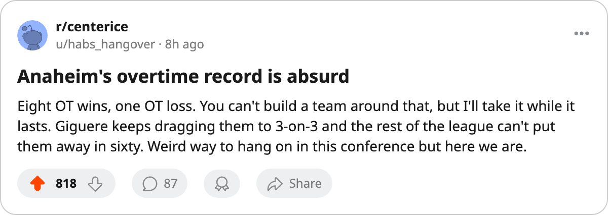

PHX
PHXNotes from the West: Anaheim Is 8-1 in Overtime and Riding a 6-Game Win Streak
The Ducks have won 8 overtime games this season, the most in the league, and they are 5th in the West at 37 points
 Ray CallumSenior correspondent · Home Ice Network
Ray CallumSenior correspondent · Home Ice Network
 Mighty Ducks of Anaheim has 10 regulation wins, 13 regulation losses, and 8 overtime wins. They are 8-1 in extra time this season, the most OT victories of any club in the league. They are on a 6-game win streak. And they are 5th in the Western Conference with 37 points.
Mighty Ducks of Anaheim has 10 regulation wins, 13 regulation losses, and 8 overtime wins. They are 8-1 in extra time this season, the most OT victories of any club in the league. They are on a 6-game win streak. And they are 5th in the Western Conference with 37 points.
This is not a team that closes games in 60 minutes. They have lost 13 in regulation. They have lost only 1 in overtime. Pittsburgh has 6 OT wins.  Nashville Predators and
Nashville Predators and  Minnesota Wild have 6. Anaheim has 8.
Minnesota Wild have 6. Anaheim has 8.
The most recent example: a 4-3 home win over  San Jose Sharks on Dec 18, decided in overtime on 21 home shots against 19. The last 10 games read WWWWWWLWWW. The numbers from that stretch are 28 goals for, 21 against. Good but not dominant. The wins are close and they keep going the distance.
San Jose Sharks on Dec 18, decided in overtime on 21 home shots against 19. The last 10 games read WWWWWWLWWW. The numbers from that stretch are 28 goals for, 21 against. Good but not dominant. The wins are close and they keep going the distance.
 Jean-Sebastien Giguere97 won last season's Vezina and he has started 24 of 32 this year, carrying 75 percent of the starts. The Ducks are 11-5 at home and 7-9 on the road. The home edge is where the overtime wins live.
Jean-Sebastien Giguere97 won last season's Vezina and he has started 24 of 32 this year, carrying 75 percent of the starts. The Ducks are 11-5 at home and 7-9 on the road. The home edge is where the overtime wins live.
 Erik Cole79 is the missing piece
Erik Cole79 is the missing piece
The Ducks have 2 men on the shelf: Erik Cole (groin, back Dec 30) and one more listed on the injured reserve. Cole is a 75-rated left wing and his absence thins the second line at a point in the season when the Ducks are scraping for offense. They have scored 72 goals in 32 games. That is not a Stanley Cup number, but it is enough when you keep winning in the extra frame.
The 6-game streak started after a loss in the middle of the last 10. The record is 10-13-1 if you ignore overtime entirely, a losing club. The 8 OT wins are what put them at 37 points and a playoff position. How long can a team keep pulling games into extra time against clubs that are willing to put it away in regulation?
Phoenix visits Dec 22, the second meeting of the season after Anaheim won the first 3-1. The Suns are 3-12 on the road and on a 1-game losing streak. It is a game the Ducks should close in 60 minutes. If it goes to overtime, well, nobody in this league is better at those than Anaheim.
